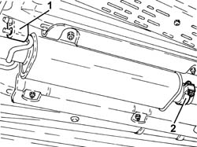
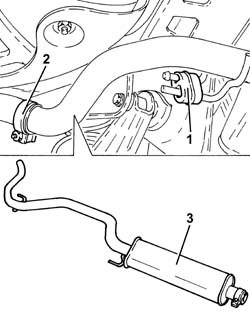

1076B30 FRONT EXHAUST SILENCER - R + R
- Path
- Procedures > 10 ENGINE > 1076 EXHAUST PIPES AND SILENCERS > 1076B EXHAUST PIPES AND SILENCERS > 1076B30 FRONT EXHAUST SILENCER - R + R
- Kind
- repair procedure (removal / refitting; the operation number is the code)
- Applies to
- all engines; all production periods
- Interactive page
- https://sloeber94.github.io/elrnDB-fCrm/en/#/194000365
Applies to: engines: 1.8, 2.2; all production periods
 Removing
Removing
 Refitting
Refitting- Position the vehicle on a lift.
1. Release the front exhaust silencer from the front flexible mounting.
2. Loosen the collar securing the front exhaust silencer to the front section of the exhaust pipe.

Applies to: engines: 1.8, 2.2; all production periods
1. Release the front exhaust silencer from the rear flexible mounting.
2. Loosen the collar securing the front exhaust silencer to the rear exhaust silencer.
3. Remove the front exhaust silencer.

Applies to: engines: 1.8, 2.2; all production periods
Refitting
Removing- Place the front exhaust silencer back in its housing.
- Tighten the collar securing the front exhaust silencer to the rear exhaust silencer.
- Fasten the front exhaust silencer to the rear flexible mounting.
- Tighten the collar securing the front exhaust silencer to the front section of the exhaust pipe.
- Remove the vehicle from the lift.
Topics that link to this page (13)
- 1040A10 FUEL TANK - R + R AND DECANT FUEL
- 1040A14 FUEL TANK - R + R FOR REPLACEMENT
- 1040B36 REAR FUEL DELIVERY LINE - R.R
- 1040E12 LOWER FUEL TANK PROTECTION - R R
- 1076A42 FRONT EXHAUST SILENCER FRONT HEAT SHILED R R
- 1076B10 EXHAUST PIPE ASSEMBLY - R + R
- 1080E20 ACTIVE CARBON FILTER FOR FUEL VAPOURS - R + R
- 3340B69 RIGID PIPE FROM LEFT RER BRAKE CONNECTOR - R.R.
- 3340B71 INTERMEDIATE RIGID PIPING FITTING, LH REAR BRAKE - R R
- 3380A10 HANDBRAKE LEVER - R+R
- 3380A30 HANDBRAKE CABLE - R+R
- 4420C10 REAR SUSPENSION STABILIZER BAR - R+R
- 4420D42 REAR SUSPENSION BEAM - R R